Use the filter buttons below to filter out for specific types of charms according to how they are used!
Utility charms are only for non-combat parts of the game, such as gaining Geo
or helping gain Soul.
Defensive charms help the player in combat by giving them an extra layer of defense or way to avoid or negate damage against enemies.
Offensive charms boost the player's DPS output.
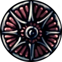
Dirtmouth
This charm is very useful for exploration and is good for newbies doing their first playthroughs. It marks the player on the map whenever they open it, allowing them to see exactly where they are. Once a player gets to fully know the layout of the map, it is recommended for them to switch to other charms that can be more useful in combat situations.
Dirtmouth
This charm spawns a swarm that collects any dropped geo near the player. It can collect Geo that has fallen into spikes, thorns, and hard-to-reach places. Though, it is important to note that Gathering Swarm does not collect Geo that falls into acid, Geo dropped by the Grubfather, or Geo rewarded from completing a Colosseum of the Fools trial.

Dirtmouth
This charm increases the duration of the player's invincibility frames after getting hit and reduces the recoil the player gets when hit. It is useful primarily during boss battles, where it is more difficult to dodge attacks or for newer players who are still unused to the parrying and dodging mechanics of the game. The long invulnerability time (about 1.7s) makes it easier to overwhelm bosses with high damage or heal quickly, while the shorter recoil time (0.8s) allows the player to bounce back from attacks faster.
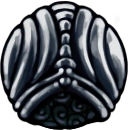
Ancestral Mound
This charm increases the amount of Soul gained by the player when hitting enemies with their Nail. The effect is small, but it remains useful for a good amount of time for healing purposes, especially for players who are still getting used to the game mechanics and still get hit a lot.
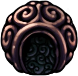
Forgotten Crossroads
This charm increases the damage of Spells and the size of Vengeful Spirit or Shade Soul. It increases the damage by 33-51% depending on the spell. It is incredibly powerful, as it can make spells one-shot many enemies, and it makes boss fights easier by allowing the player to safely deal more damage from a distance.
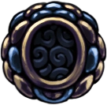
Resting Grounds
This charm greatly increases the amount of Soul gained by the player when hitting enemies with their Nail. It is basically a stronger version of the Soul Catcher.
Fungal Wastes
This charm decreases the cooldown of the Mothwing Cloak and allows the player to dash downwards. The ability to dash downwards is useful in certain platforming segments or in dodging certain attacks.

Dirtmouth
This charm increases the run speed of the player by around 20%. This speed buff is only applied when the player is grounded and not in walk-zones or in liquid such as acid or water.
Forgotten Crossroads
This charm grants the player 15 soul when taking damage. It does not provide enough Soul per hit to grant a full heal on its own, but when combined with other ways to gain Soul, this charm's effectiveness increases significantly.
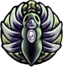
Forgotten Crossroads
This charm causes Nail hits to fire a projectile which deals half of the Nail's damage per hit. These projectiles can pierce enemies infintely. These buffs are only active when the player has full health.
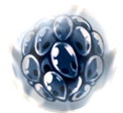
Fungal Wastes
This charm increases the player's health by 2 masks. However, if the player dies while the charm is equipped, it will break and the player will have to pay the Leg Eater 200 Geo to repair it. (160 Geo if the Defender's Crest is equipped)
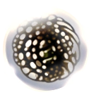
Fungal Wastes
This charm increases the amount of Geo that is dropped by enemies. However, if the player dies while the charm is equipped, it will break and the player will have to pay the Leg Eater 150 Geo to repair it. (120 Geo if the Defender's Crest is equipped)
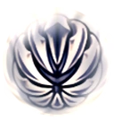
Fungal Wastes
This charm increases the player's damage dealt with their Nail by 50%. However, if the player dies while the charm is equipped, it will break and the player will have to pay the Leg Eater 350 Geo to repair it. (280 Geo if the Defender's Crest is equipped)
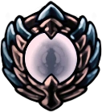
City of Tears
This charm reduces the amount of Soul required to cast Spells. It works well in combination with charms that increase Soul gain, such as Soul catcher or Soul eater.
Forgotten Crossroads
This charm reduces the horizontal knockback or recoil the player experiences when hitting enemies, spikes, and walls with their Nail. It also prevents the player from being knocked horizontally when jumping on purple mushrooms without using their Nail.
Dirtmouth
This charm increases the knockback dealt to enemies when striked by the player's Nail or hit by Nail Arts. Additionally, it also reduces the number of hits required to stagger a boss by one hit. It can be useful for enemies who have uninterruptible attacks like the Wandering Husk.
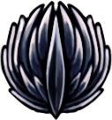
Kingdom's Edge
This charm allows the player to attack faster with their Nail by lowering the cooldown of the aforementioned attack. In most situations, it not only increases the player's DPS but also increases the speed that they gain Soul from hitting enemies.
Forgotten Crossroads
This charm increases the range of the player's Nail strikes by 15%. It's good for maintaining distance from enemies and performing safer Nail-bounces. It does not affect the range of Nail Arts or Grubberfly's Elegy.
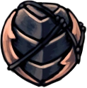
Fungal Wastes
This charm increases the range of the player's Nail strikes by 25%. It is better than the Longnail, but it is harder to obtain and takes up more notch slots. The range of Nail Arts and Grubberfly's Elegy are still unaffected.
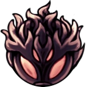
King's Pass
This charm increases the player's Nail damage by 75% when at 1 Mask of health. It does not affect the damage of spells, and thus is only viable for Nail-focused builds or playstyles.
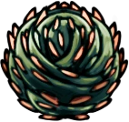
Greenpath
This charm makes the player sprout thorny vines when taking damage. These thorns damage nearby enemies, dealing damage equal to the base damage of the player's Nail.
Howling Cliffs
This charm spawns a protective shell around the player when using Focus. It can only block up to 4 hits before it breaks. Once it breaks, it can only be repaired by resting at a Bench.
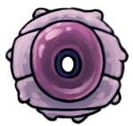
Royal Waterways
This charm replaces the Vengeful Spirit or Shade Soul spell with a spell that summons a horde of damaging flukes. The range and consistency of the aforementioned replaced spells' for around double the damage.
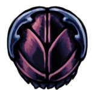
Royal Waterways
This charm makes the player constantly emit a damaging yellow-brown aura when equipped. The aura is not very powerful and has very little range, making it useful only for really specific situations.
Forgotten Crossroads
This charm uses the player's Soul to spawn hatchlings which deal damage to enemies on contact. As the player will use up Soul for this charm that may otherwise be used for spells or healing, it is advised to use this charm for a build that focuses utilizing Nail damage.
Forgotten Crossroads
This charm makes focusing Soul around 33% faster. The startup time of charging Soul, however, is not affected by this charm. Quick Focus is especially useful in situations where the player has to deal with lots of combat.
Crystal Peak
This charm doubles the Masks healed when using Focus at the cost of increasing the player's focus time by around 65%, not including the startup time of charging Focus.
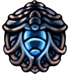
Forgotten Crossroads
This charm gives the player 2 Lifeblood masks when resting at a bench.
The Abyss
This charm gives the player 4 Lifeblood masks when resting at a bench.
Howling Cliffs
This charm changes all the player's masks to Lifeblood masks and increases Masks by 40%, rounded up. The increase in masks only takes into account the player's base masks and the two masks from Fragile/Unbreakable Heart. The Lifeblood masks from Lifeblood Heart and Lifeblood Core are not taken into account for the mask increase.
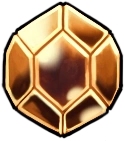
The Hive
This charm passively heals the last Mask of health that the player lost after 10 seconds without taking any further damage. Equipping this also makes the enemies inside The Hive passive to the player.
Fungal Wastes
When charging Focus while having this charm equipped, it releases a cloud of damaging spores around the player. Having this equipped will also enable the player to understand the dialogue of Mister Mushroom, and also enable the player to read certain Lore Tablets found in Fungal Wastes.
Deepnest
This charm gives the player the ability to damage enemies when dashing through them. It also increases their dash length when using the Shade Cloak.
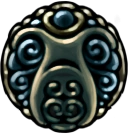
Greenpath
This charm allows the player to move while charging Focus, though limited. It is not possible to jump or use any movement abilities while charging.
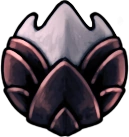
Unique Obtainment Locations
This charm reduces the charging time required to use Nail Arts.
Deepnest
This charm summons 3 weaverlings that attack enemies. The weaverlings deal 3 damage per hit.